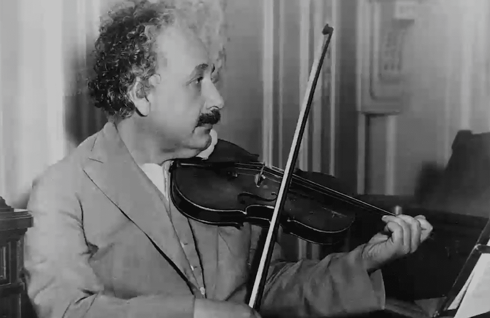

Hobbies

Playing the violin
Sailing
Philosophy
Hiking

Biking

Puzzles
Reading Books about Nature
Famous Physicist and Mathematician
Albert Einstein 14 March 1879 – 18 April 1955 was a German-born theoretical physicist, widely held to be one of the greatest and most influential scientists of all time. Best known for developing the theory of relativity, he also made important contributions to quantum mechanics, and was thus a central figure in the revolutionary reshaping of the scientific understanding of nature that modern physics accomplished in the first decades of the twentieth century. His mass–energy equivalence formula E = mc2, which arises from relativity theory, has been called "the world's most famous equation". He received the 1921 Nobel Prize in Physics "for his services to theoretical physics, and especially for his discovery of the law of the photoelectric effect", a pivotal step in the development of quantum theory. His work is also known for its influence on the philosophy of science. In a 1999 poll of 130 leading physicists worldwide by the British journal Physics World, Einstein was ranked the greatest physicist of all time. His intellectual achievements and originality have made the word Einstein broadly synonymous with genius.
Publication Date: March 1, 1901
Albert Einstein's paper titled "Conclusions Drawn from the Phenomena of Capillarity," published on March 1, 1901, is a significant contribution to the field of fluid dynamics. In this work, Einstein investigated the behavior of fluids, specifically focusing on capillarity—the phenomenon of how liquids rise or fall in narrow tubes. Einstein's meticulous observations and mathematical analysis in this paper revealed groundbreaking insights into the forces at play within fluids. He introduced key concepts such as surface tension and the curvature of fluid interfaces, shedding light on the intricate interactions between molecules at the liquid-gas interface. This paper laid the foundation for our modern understanding of capillarity and contributed to the development of the broader field of fluid mechanics. Einstein's work demonstrated his early prowess in both experimental and theoretical physics. Furthermore, the paper's findings have practical implications in various industries, from microfluidics and materials science to biology and engineering. Understanding capillarity is crucial for designing microfluidic devices, predicting liquid behavior in porous materials, and even studying phenomena like plant water uptake. Einstein's ability to bridge theory and experimentation, even at this early stage of his career, showcased his exceptional scientific acumen. His work on capillarity continues to influence researchers and innovators in diverse fields to this day. Overall, "Conclusions Drawn from the Phenomena of Capillarity" is a testament to Einstein's intellectual curiosity and pioneering contributions to the understanding of fundamental physical phenomena.
Publication Date: June 9, 1905
Albert Einstein's paper, "On a Heuristic Viewpoint Concerning the Production and Transformation of Light," published on June 9, 1905, represents a watershed moment in the history of physics. In this remarkable work, Einstein introduced the revolutionary concept of the photon, fundamentally altering our understanding of light and laying the groundwork for quantum mechanics. At the time, classical physics described light as a continuous electromagnetic wave, but Einstein's paper challenged this prevailing notion. He proposed that light energy is quantized into discrete packets or "quanta," which we now know as photons. This conceptual leap addressed a long-standing problem in physics: the photoelectric effect. The photoelectric effect, where electrons are emitted from a material when exposed to light, had puzzled scientists for years. Einstein's theory explained this effect perfectly by showing that the energy of photons is directly related to their frequency, not their intensity as classical physics had suggested. This paper marked the birth of quantum mechanics, a revolutionary theory that describes the behavior of matter and energy at the smallest scales. Einstein's work on the photoelectric effect earned him the Nobel Prize in Physics in 1921. Beyond its theoretical significance, this paper had profound practical implications, leading to the development of modern technologies such as lasers, photodetectors, and quantum optics. It also laid the foundation for subsequent groundbreaking discoveries in quantum physics. Einstein's willingness to challenge established paradigms and propose daring ideas in this paper exemplifies his scientific genius.
Publication Date: July 20, 1905
Albert Einstein's doctoral thesis, "A New Determination of Molecular Dimensions," completed on April 30, 1905, and published on July 20, 1905, is a landmark contribution to the field of statistical mechanics. In this comprehensive work, Einstein introduced innovative methods for calculating Avogadro's number and molecular dimensions, fundamentally advancing our understanding of matter at the atomic scale. At the time, the precise determination of Avogadro's number—the number of atoms or molecules in one mole of a substance—remained a challenging problem in physics and chemistry. Einstein's doctoral thesis tackled this problem head-on by providing a novel approach that combined macroscopic observables with microscopic insights. Einstein's thesis employed statistical methods to analyze the behavior of small particles suspended in a liquid, a crucial step in estimating Avogadro's number. His work demonstrated how the motion of tiny particles, known as Brownian motion, could provide valuable information about the unseen world of atoms and molecules. One of the thesis's key contributions was the development of a theoretical framework that connected macroscopic measurements, such as viscosity and diffusion coefficients, to the fundamental properties of particles at the molecular level. This groundbreaking work laid the foundation for the experimental verification of the atomic theory. Importantly, Einstein's thesis not only advanced scientific understanding but also provided a practical method for determining Avogadro's number and molecular dimensions. His innovative approach has since become a cornerstone of modern chemistry and materials science.
Publication Date: July 18, 1905
Albert Einstein's paper titled "On the Motion of Small Particles Suspended in a Stationary Liquid," received on May 11, 1905, and published on July 18, 1905, represents a pivotal contribution to the field of statistical physics and the confirmation of atomic theory. In this remarkable work, Einstein examined the seemingly random and erratic movement of tiny particles, such as pollen grains, when suspended in a stationary liquid—a phenomenon known as Brownian motion. In this remarkable work, Einstein examined the seemingly random and erratic movement of tiny particles, such as pollen grains, when suspended in a stationary liquid—a phenomenon known as Brownian motion. At the time, the scientific community was still grappling with the implications of atomic theory, and the precise nature of Brownian motion was a subject of considerable debate. Einstein's paper provided a groundbreaking explanation for this phenomenon, offering compelling evidence for the existence of atoms and molecules. He proposed that the motion of these small particles could be attributed to the constant bombardment by the surrounding molecules, effectively validating the kinetic theory of matter. This work was instrumental in confirming the atomic hypothesis and forever changed our understanding of the microscopic world. Moreover, the mathematical framework developed by Einstein to describe Brownian motion laid the foundation for the field of stochastic processes and statistical mechanics. His equations provided a means to quantify the random motion of particles, which has since found applications in various scientific disciplines, including chemistry, biology, and economics.
Publication Date: September 26, 1905
Einstein's paper also introduced the concept of time dilation and length contraction. According to his theory, as an object approaches the speed of light, time for that object slows down relative to an observer at rest, and the length of the object contracts in the direction of motion. These concepts had profound implications for our understanding of the universe, revealing that time and space are not fixed but rather intertwined and relative to the observer's motion. Furthermore, Einstein's equations in this paper laid the groundwork for the famous equation E=mc², which relates energy (E) and mass (m) through the speed of light (c). This equation revolutionized our understanding of the relationship between matter and energy, and it has become one of the most iconic equations in physics. In summary, Einstein's paper on the electrodynamics of moving bodies marked a pivotal moment in the history of physics. It challenged conventional wisdom, redefined our notions of space and time, and provided the theoretical framework for the theory of special relativity. This paper not only revolutionized physics but also laid the foundation for Einstein's subsequent work on general relativity, ultimately reshaping our understanding of the fundamental laws governing the universe.
Publication Date: November 21, 1905
Description: Published on November 21, 1905, this paper addresses the question of whether the inertia of a body depends on its energy content, a fundamental concept in Einstein's theory of relativity. Einstein's paper also addressed the concept of conservation of energy and mass, demonstrating that energy can be converted into mass and vice versa. This revelation had profound implications not only for theoretical physics but also for practical applications, particularly in the realm of nuclear physics, where it played a crucial role in understanding nuclear reactions and the release of energy. In summary, this paper represents a critical step in Einstein's journey toward formulating the theory of special relativity. It introduced the groundbreaking concept of mass-energy equivalence, reshaping our understanding of the fundamental relationship between matter and energy. This work paved the way for further developments in physics, including the development of nuclear energy and the realization of the immense energy stored within matter, ultimately influencing various scientific and technological advancements in the 20th century and beyond.
Publication Date: December 2, 1915
Description: This paper, issued on June 29, 1916, presents Einstein's field equations of gravitation, a cornerstone of his theory of general relativity. One of the most famous consequences of these field equations is the prediction of the bending of light by gravity. This prediction was spectacularly confirmed during the solar eclipse of 1919 when astronomers observed the deflection of starlight as it passed near the sun, providing strong experimental evidence for general relativity. Einstein's theory of general relativity not only revolutionized our understanding of gravity but also introduced a new conceptual framework for physics. It paved the way for the understanding of cosmic phenomena like black holes, the expansion of the universe, and the nature of spacetime itself. The field equations of gravitation remain a cornerstone of modern theoretical physics and continue to inspire research in cosmology, astrophysics, and the search for a unified theory of fundamental forces. In summary, this paper marks a critical moment in the history of physics, where Einstein's revolutionary ideas about gravity reshaped our understanding of the cosmos. The field equations of gravitation represent a fundamental pillar of modern theoretical physics, contributing to our comprehension of the universe's structure and behavior on both cosmic and microscopic scales.
Publication Date: June 1916
The paper titled "Approximate Integration of the Field Equations of Gravitation" likely falls within this context. In this work, Einstein may have explored techniques for obtaining approximate solutions to the complex field equations. These approximate solutions could have been valuable for gaining insights into the behavior of gravitational fields in specific situations, such as those involving massive astronomical objects. Approximate solutions are a common approach in theoretical physics when exact solutions are elusive or computationally challenging to obtain. They provide a simplified, yet reasonably accurate, description of physical phenomena. Researchers often use approximation methods to make predictions and gain qualitative insights into the behavior of physical systems. While specific details of this paper are not available, it would have contributed to the ongoing development of Einstein's theory of general relativity. Approximate integration methods are still an important part of modern theoretical physics, aiding in our understanding of complex physical systems, particularly in the study of gravitational interactions in the cosmos.
Playing the violin
Sailing
Philosophy
Hiking
Biking
Puzzles
Reading Books about Nature


Publication Date: August 15, 2023
Description: In this blog post, I delve into the captivating and mind-bending world of relativity theory, exploring its profound concepts and their transformative implications for our understanding of the universe. We journey through the spacetime continuum, examining how Einstein's groundbreaking theories revolutionized physics and opened new doors of exploration into the cosmos.
Publication Date: September 5, 2023
Description: Join me on an illuminating journey into the mysterious subatomic realm of quantum mechanics. In this blog post, we unravel the enigmatic behavior of particles at the quantum level and discover how quantum mechanics challenges our classical notions of reality. Explore the wave-particle duality, the uncertainty principle, and the quantum entanglement that lies at the heart of the quantum world.
Publication Date: October 12, 2023
Description: In this thought-provoking blog post, we delve into the intricate relationship between light, time, and the fundamental speed of causality. We explore how these concepts shape our perception of the universe and the consequences they have on our understanding of spacetime. Einstein's theories of relativity transformed our understanding of these fundamental aspects of physics, and we examine their implications on the fabric of the cosmos.
Publication Date: November 8, 2023
Description: Join me on an awe-inspiring journey through the cosmos in this captivating blog post. We venture into the enigmatic world of black holes, unravel the mysteries of cosmic expansion, and contemplate the vastness of the universe. From the event horizon to the cosmic microwave background, we explore the wonders of the universe and the discoveries that have reshaped our understanding of the cosmos.
Publication Date: December 20, 2023
Description: In this insightful blog post, I reflect on the profound role of imagination in scientific discovery. We delve into how imagination has played a pivotal role in shaping our understanding of the cosmos and driving scientific progress throughout history. From Einstein's own thought experiments to the innovative ideas that have shaped modern physics, we explore the creative power of the human mind in the pursuit of knowledge.